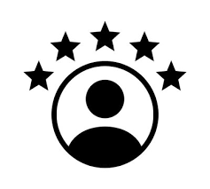
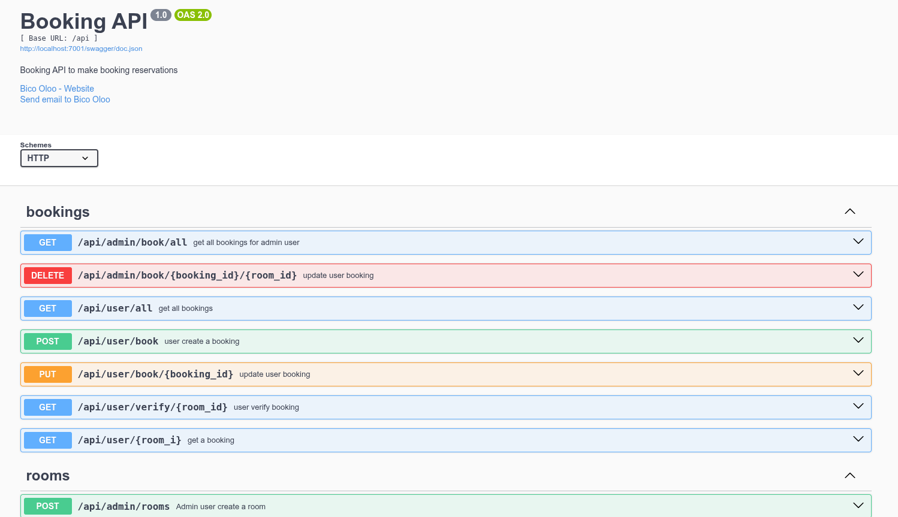
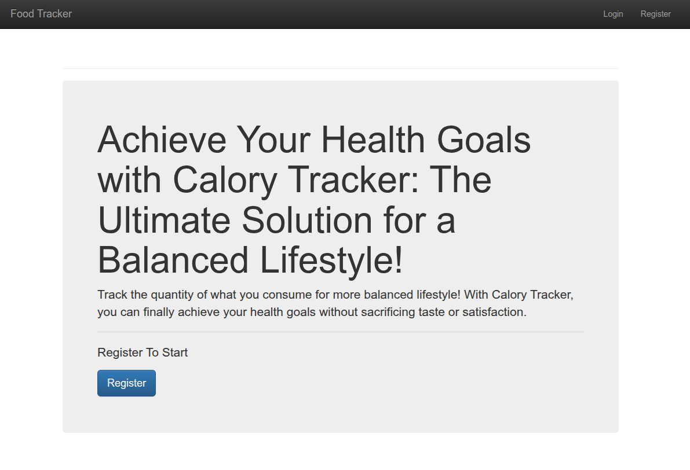

Backend engineer building
Event-driven, transaction-critical systems
Java & Spring Boot · Python · Kafka · RabbitMQ
Get To Know More

Backend systems
Distributed messaging
Transaction correctness
Computing & Information Systems
ALX Backend Engineering
DevOps Engineering
ISTQB – CTFL
I build backend systems where correctness matters under concurrency: event-driven services, transaction workflows, and APIs that need to fail predictably. My primary stack is Java and Spring Boot for event-driven services and Python for APIs and search applications. In my sportsbook pipeline, Rapid Engine and Event Consumer can select Kafka or RabbitMQ through environment configuration. A background in software testing shapes how I approach reliability: explicit delivery behavior, focused automated tests, and clear service boundaries. I’m currently developing a three-service sportsbook platform covering odds ingestion, event settlement, and betting APIs.
How I Approach Systems
Messaging architecture
Rapid Engine and Event Consumer each support RabbitMQ or Kafka, selected through MESSAGING_BROKER. Broker-specific publishers keep transport configuration out of the event flow.
Reliability
Batch publishing waits for broker acknowledgement before advancing the event cursor. Failed batches retain the previous cursor; consumers are designed around at-least-once delivery.
Read the delivery notesSettlement correctness
Settlement handles moneyline, handicap, and totals markets with deterministic bet resolution. The Event Consumer repository reports a 220+ test suite covering evaluators and settlement behavior.
Review settlement logic and testsBrowse My Recent
Featured · Distributed systems
A three-service Java platform: Rapid Engine ingests odds and events, Event Consumer evaluates results and emits settlement updates, and API Gateway handles betting and wallet workflows. Rapid Engine and Event Consumer can each select RabbitMQ or Kafka at runtime with MESSAGING_BROKER.
Design focus Acknowledged message delivery, retry and dead-letter paths, explicit settlement rules, and transaction-safe wallet workflows.
Evidence 220+ settlement-service tests and 250+ API gateway tests are reported in the project repositories.
Production project
A hiring platform with candidate and admin workflows, server-sent event streams, Redis-backed rate limiting, and a containerized Flask backend. The repository includes a React and TypeScript frontend, API documentation, and CI checks.
Other project
A FastAPI search application that retrieves Google organic results through SerpAPI, offers both a web interface and JSON API, and stores search history.

Go hotel reservation service with role-based access, Stripe payments, and asynchronous messaging through Kafka or RabbitMQ. Deployed behind Nginx on a Google Cloud VM.

Go service for tracking daily nutritional intake, with user authentication and a relational data layer.
Get in Touch